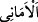
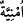
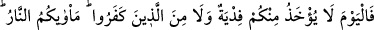
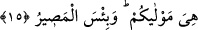

biridir. Zîra meclislerinde ilim ve irfan elde edecek şekilde faydalanmak için bu gibi
hak ve hayır vesilesi olan kimselerin uzun müddet yaşamaları ümid edilir.
Din veya peygamberlik ya da bugün yaşadığımız şu kıyâmet günü hakkında şüpheye
düştünüz.
“Ve kuruntular sizi aldattı.” Boş kuruntular ki, İslâm’ın işinin ters gitmesini beklemek
cümlesinden boş kuruntulardır. “__WORD__/Emânî” kelimesi “__WORD__/ümniyye” kelimesinin
çoğuludur, boş şeyler demektir. Farsça ifâdesiyle ârzû demektir.
‘Aynü’l-ma‘ânî adlı eserde şöyle denmiştir: Şeytanın hîleleri sizi aldattı. Ebü’l-Leys
ise dünyanın bâtıl, bozuk şeyleri sizi aldattı, diye tefsir edilmiştir.
“O çok aldatan (Şeytan) sizi, Allah hakkında bile aldattı. Nihâyet Allah’ın emri”
yani, ölüm “gelip çattı.” Yâni şeytan sizi sonsuz kerem sâhibi olan Allah hakkında
afvedici kerem sâhibidir, azab etmez, diye aldattı.
Katàde demiştir ki; Allah onları cehenneme atıncaya kadar şeytanın aldatmasına
maruz kalmaya devam ettiler.
Zeccâc demiştir ki, garûr kelimesi feûl ölçüsünde mübalağa, yoğunluk ifâde eden
isimlerdendir. Çok yiyen kimse için “fülanün ekûlün”; yâni çok yiyen denilir. Bunun gibi
şeytan da âdemoğullarını çok aldattığı için kendisine garûr/çok aldatan denir.
Müfredât’ta ise garûr, mal, makam, şehvet ve şeytan gibi insanı aldatan her şeydir.
Burada ise şeytan olarak tefsir edilmiştir. Çünkü o dünya ile aldatanların en kötüsüdür.
Dünya için de: “O aldatır, zarar verir ve geçer gider” denmektedir.
15. Bugün artık ne sizden ne de inkâr edenlerden bedel kabul edilir, varacağınız
yer ateştir. Size yaraşan odur. Ne kötü bir dönüş yeridir!
“Bugün artık ne sizden ne de inkâr edenlerden bedel kabul edilir,” Sizden maksad,
münâfıklardır. Yâni, ey münâfıklar! Kendinizden azabı uzaklaştıracak vereceğiniz fidye
kabul edilmez. Yâni Size kendini fedâ edecek bir şey bulursanız azabdan kurtulursunuz.
Fidâ, belâdan korunmak için insanın can ve malından verdiği diyettir. Yâni, sizden ne
bir diyet ne de kendi yerinize bir başka can kabul edilir. “İnkâr edenlerden de” Açık ve
gizli inkâr edenlerden de diyet kabul edilmez.
Bu âyet-i kerîmede insanların üç kısım oldukları gösterilmektedir. Açık ve gizli
olarak mü’min. İşte en hâlis insan budur. Görünüşte mü’min içiyle îmân etmeyen, bu da
münâfıktır. Bir de içi ve dışıyla kâfir olan vardır. “Varacağınız yer ateştir.” Dönüş
yeriniz orasıdır, ebediyyen başka bir yere dönemeyeceksiniz.
“Size yaraşan odur.” Yâni ateştir. İşlediğiniz günahlardan dolayı efendinin kölesi
üzerindeki yetkilerini kullandığı gibi O da sizin üzerinizde istediğini yapıyor. Yahut o